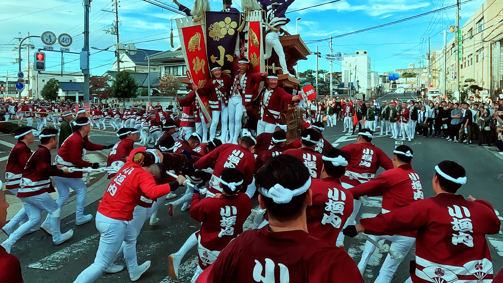
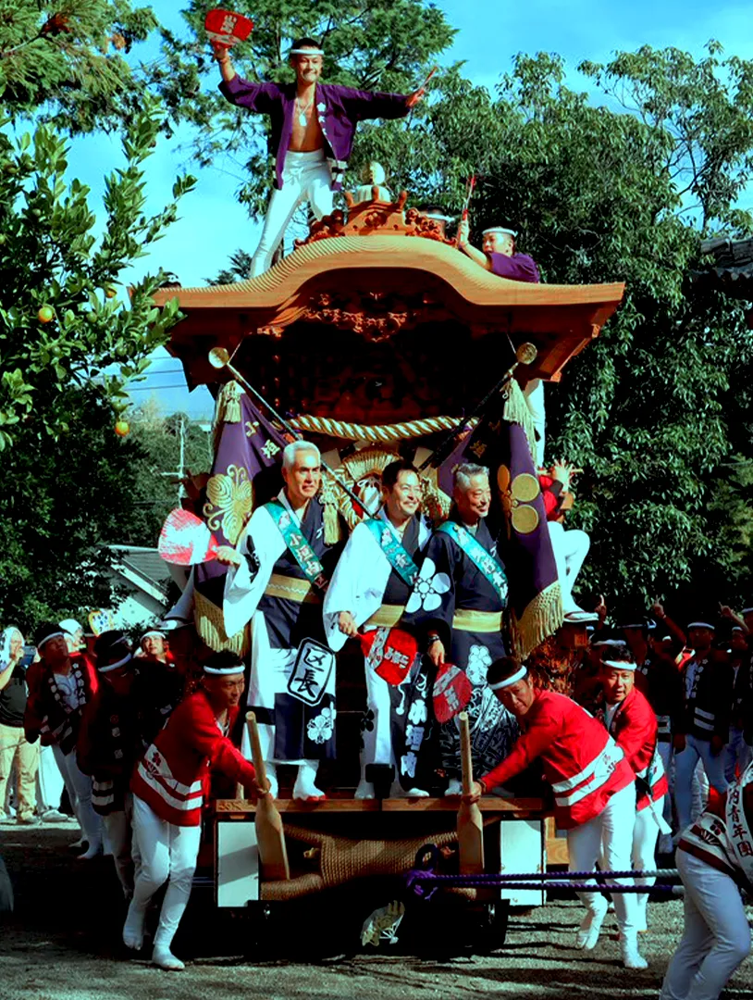
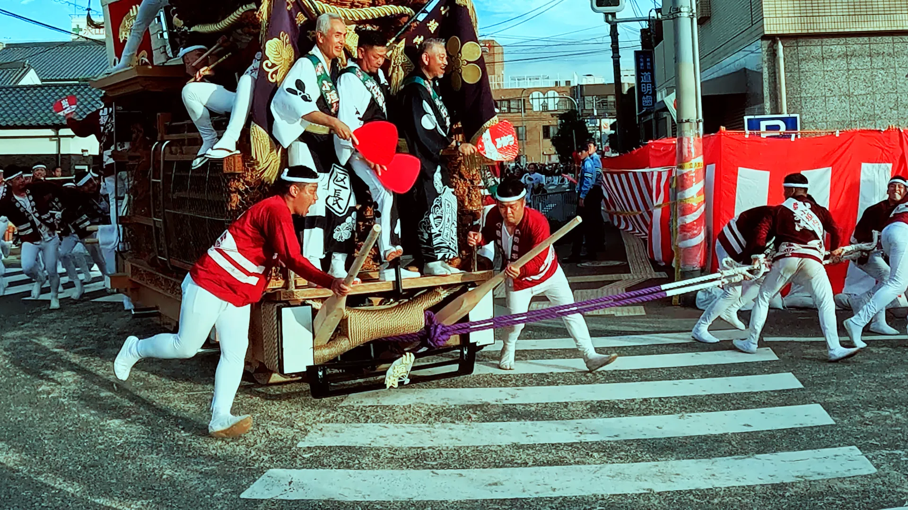
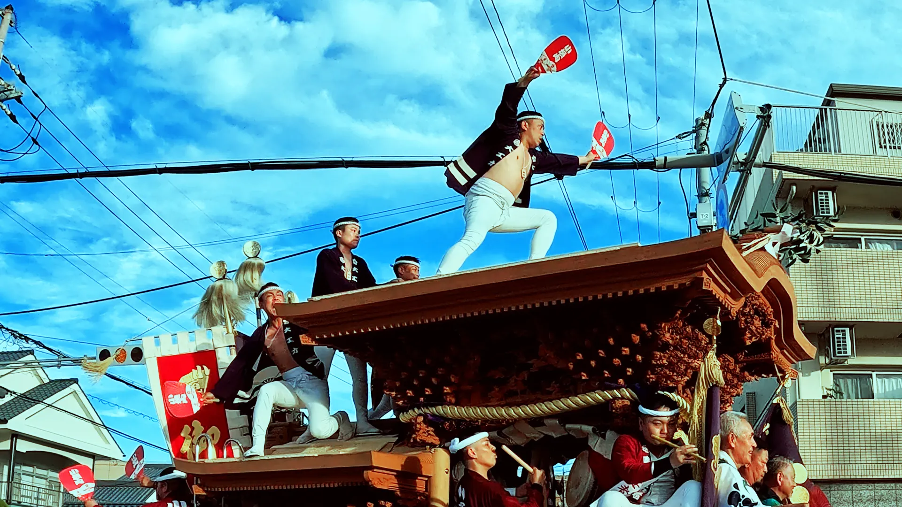
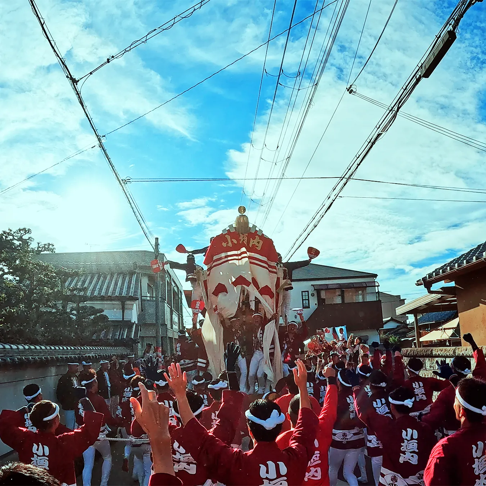
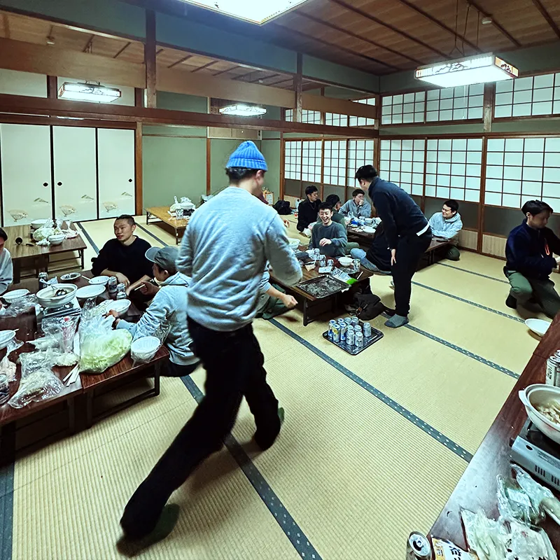
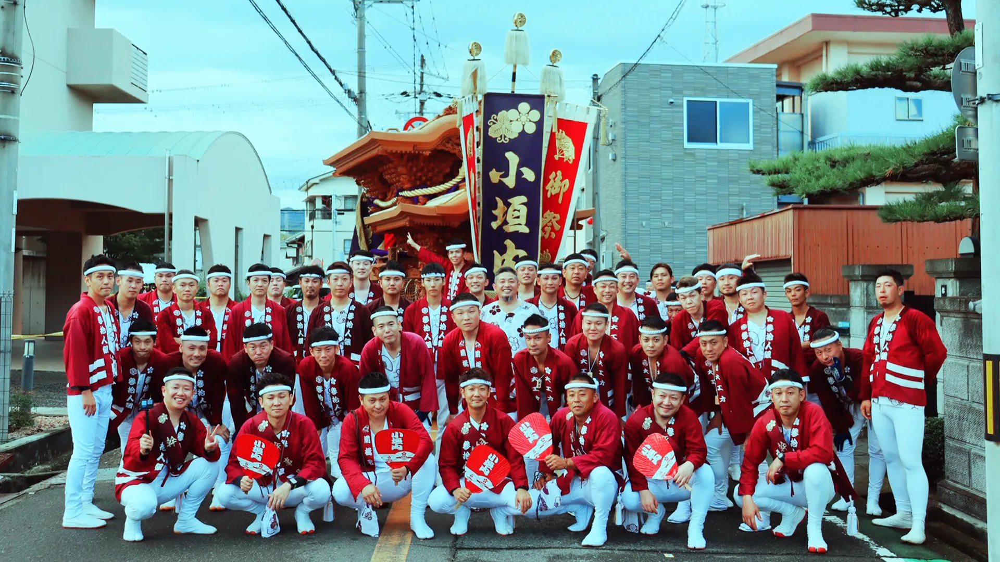
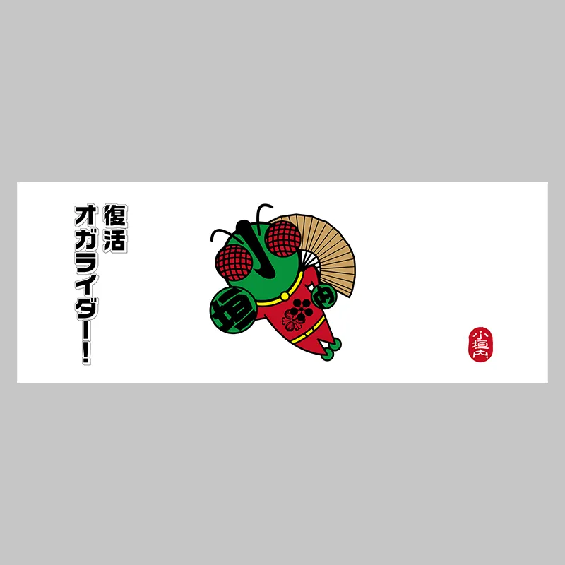
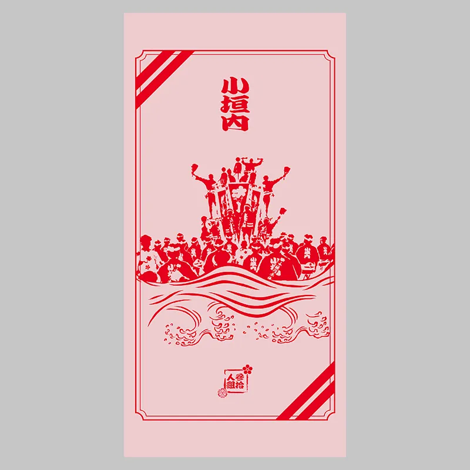
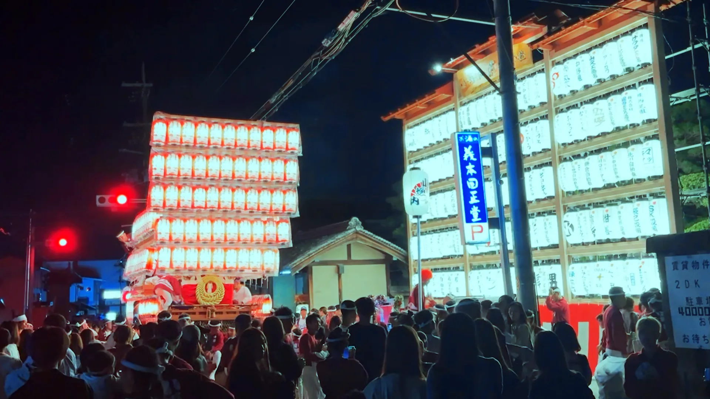

後梃子
だんじりの後ろで梃子を操り、方向を決める。やりまわしの要です。
令和八年度日程
試験曳き10月4日（日）本曳き10月10日（土）・11日（日）
小垣内参拾人組では
祭りを支えてくださる皆様からの
御寄附を受け付けています。
このページは、小垣内参拾人組への御花・寄付の受付です。
小垣内区全体への御花は、祭礼当日に本部で受け付けています。
小垣内参拾人組は、大阪府泉南郡熊取町小垣内区のだんじりで、後梃子・前梃子・大工方を担っています。


だんじりの後ろで梃子を操り、方向を決める。やりまわしの要です。

前輪の動きを受け持ち、曳き手と息を合わせて進路を整えます。
※前梃子は若頭管轄でもあります

屋根の上で合図を送り、全体の呼吸をつくる。祭りの花形です。
受け継ぐ人がいて、支える人がいて、共に楽しむ人がいる。その一人ひとりの想いが、小垣内の祭りをつくっています。



小垣内参拾人組では、2024年まで基本的は花寄せを行わずに運営してきました。しかし、組員の減少や物価高騰により、2025年から御花の受付を開始しています。
この循環を断ち切るには、参加する人の金銭的な負担を下げるしかありません。「参加したい」を「参加できた」に変えるために、皆さまの力を貸してください。
どちらか一方でも、両方でもかまいません。
現金でのお受け取り。金額に応じて参拾人組のタオルをお渡しします。


参拾人組のメンバーに直接お声がけください。祭礼当日の受付は行いません。
組に知り合いがいない方はこちらクレジットカードでのオンライン寄付。粗品のかわりに、YouTube総集編のエンドクレジットにお名前を掲載します。遠方の方にも。
昨年は66名の方に御支援いただきました！
掲載名は決済ページの入力欄でご指定ください。掲載を希望されない場合はその旨をご記入ください。オガファンはタオルお返しの対象外です。
御花の受け渡し方法をこちらからご案内します。お気軽にご連絡ください。
